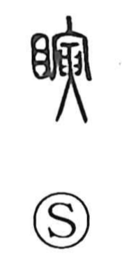

瞬

Uncategorized
Kun: matataku, mabataku | On: shun
instant ・ moment ・ to blink ・ to wink
Explanation
Shirakawa interprets 瞬 as a phono‑semantic character: the eye element points to sight, and 舜 supplies the sound. Early sources also preserve related forms—written with signs such as 寅, the image of hands placed to either side of an arrow—evoking the careful act of holding an arrow up before the eyes. Characters written as 膑 and 朕 in ancient texts depict an arrow set before the eyes and came to express the involuntary blink or wink that occurs in such a tense instant. From this image, 瞬 naturally means “to blink,” and by extension it names the brevity of a blink, an extremely short span of time, as in compounds like 瞬間, 瞬刻, and 瞬時.